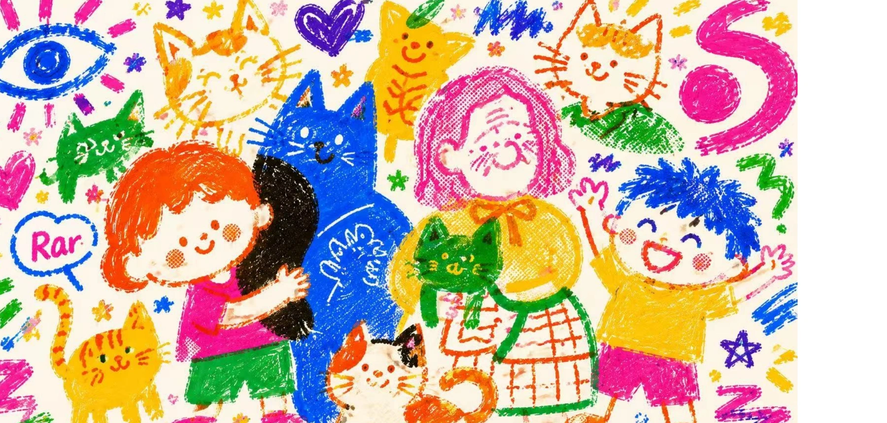

ILLUSTRATION / GENERATIVE STUDIES
把想象，
画得热闹。
蜡笔的质感，
与社区里的每一种关系。

ILLUSTRATION / GENERATIVE STUDIES07
PROJECT OVERVIEW / 项目概述
The project.
以明亮的蜡笔质感和社区人物关系为线索，通过 AI 工作流探索画面，再将筛选后的图像发展为插画系列与视觉海报。
- DISCIPLINE / 方向
- 生成式插画 / 海报
- ROLE / 负责内容
- Prompt Design、即梦生成、AI 排版、视觉海报
- DELIVERABLES / 产出
- 插画系列 / 视觉海报 / 创作流程
01画面语言
不那么规整，
才有生活的热闹。
保留蜡笔的笔触感与鲜明色彩，让人物、动物与日常符号一起构成轻松的关系场景。
02创作流程
从文字里的画面，
到画面里的关系。
由 GPT 整理创意 demo 与画面描述，使用即梦生成图像，再筛选视觉方向并进行海报整理。
01 / DESCRIBE
构建描述
整理人物关系、画面气氛与材质语言。
02 / GENERATE
生成与筛选
在生成结果中选择连贯的视觉方向。
03 / COMPOSE
排版与延展
将插画融入海报与完整视觉呈现。
03插画系列
让不同的人，
都能出现在画面里。
从单张图像到系列拼合，让社区、人物与日常关系持续延展。
04海报应用
你眼中的我，
是什么样？
让插画语言与文字形成对话，以鲜明的字形与色彩连接社区共创的主题。
ORIGINAL PROJECT / 03 PAGES查看完整原稿
保留原有方案的全部页面。点击图片可放大查看细节。